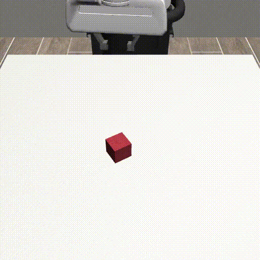
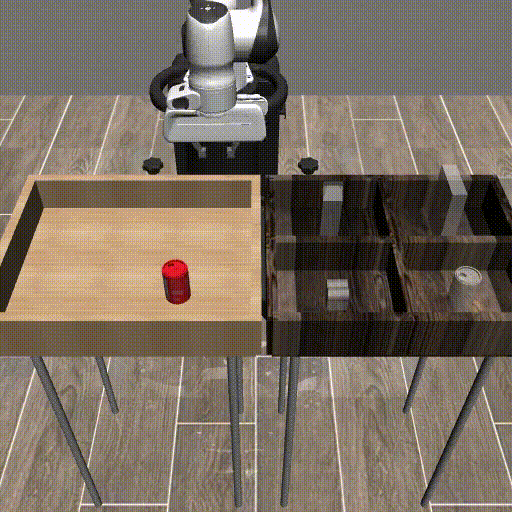

Learning Robot Manipulation from Demonstrations using Flow Matching
This page covers my final project for 16-831: Introduction to Robot Learning. For this project, my group explored offline robot learning from human demonstrations using modern generative models. The main goal was to see whether newer approaches—specifically diffusion policies and flow matching models—could learn robot manipulation behaviors from fixed datasets without any online interaction. We ran our experiments using the RoboMimic benchmark, since it provided some simple tasks that were easily comparable to other models.
For my part of the project, I implemented and trained the flow matching policy. This involved adapting the architecture used in diffusion policies, integrating it into the RoboMimic training pipeline, and running the experiments across the full benchmark task set. Luckily, I was able to do all of the training for the flow matching model on my laptop GPU, though it did take around a week. Both models were trained using RoboMimic’s proficient human demonstration datasets with low-dimensional state observations.
 |
 |
 |
 |
 |
Overall, flow matching actually produced competitive results across most tasks.
Report
The paper: RL 16-831 Project Report (PDF).